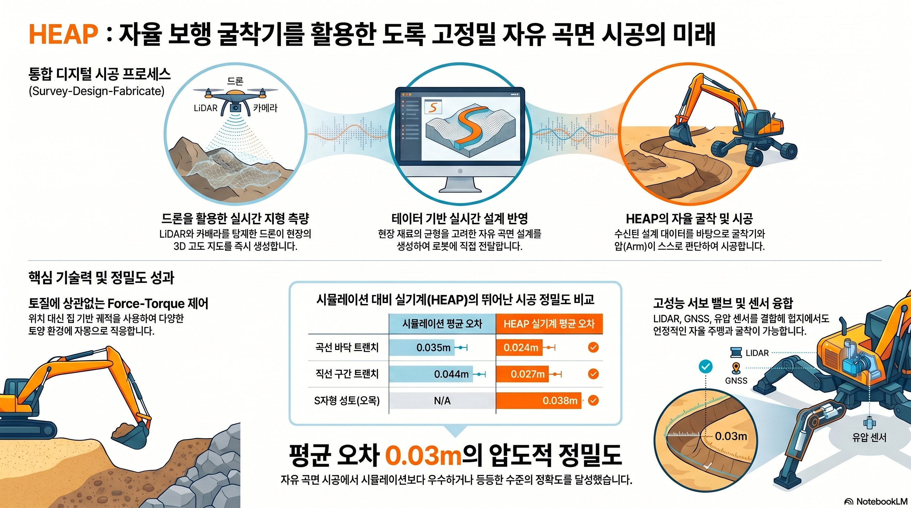

2021 High-Accuracy Autonomous Excavation Of Free-Form Shapes_요약
High-Accuracy Autonomous Excavation Of Free-Form Shapes - 요약
한줄 요약
세계 최초 자율 보행 굴착기 HEAP을 개발하고, 힘-토크 궤적 기반의 토양 독립적 굴착 사이클과 드론 측량-설계-시공을 통합한 실시간 디지털 공정으로 자유곡선 형태의 제방을 ~3-5cm 정밀도로 자율 시공하였다.
1. 연구 배경 및 동기
문제
- 건설 분야 생산성은 지난 20년간 1% 성장에 그침 (세계 경제 2.8% 대비)
- 노동력 부족 심화 + 대형 건설 프로젝트의 반복적 지연
- 측량(Survey) → 설계(Design) → 시공(Fabrication)이 순차적으로 분리되어 실시간 적응 불가
500 기존 순차적 Survey-Design-Fabrication 공정(위)에서 삼각형 병렬 통합 공정(아래)으로의 패러다임 전환
기존 연구의 한계
| 시스템 | 기관 | 한계점 |
|---|---|---|
| LUCIE (1988) | Lancaster Univ. | 위치 궤적 기반, 단순 트렌치만 가능 |
| ALS (1998) | Carnegie Mellon | LiDAR 추가했으나 대량 굴착에 한정 |
| THOR | TU Kaiserslautern | 행동 기반 제어, 정밀 형상 불가 |
| 1.5t 굴착기 | Australian ACFR | 임피던스 제어, 토양 변화 대응 미흡 |
| 기존 연구 전반 | 다수 | 위치 궤적 → 토양 강도 초과 시 대응 불가 |
본 연구의 기여
- 엔드이펙터 힘-토크 궤적 기반의 토양 독립적 굴착 사이클
- 세계 최초 자율 보행 굴착기 HEAP: 센싱·액추에이션·제어
- 바퀴-다리 복합 로봇을 위한 일반화된 상태 추정 기법
- 고유감각(버킷 경로)+외부감각(LiDAR) 융합 굴착 매핑
- 자유곡선 트렌치 및 3D 제방을 위한 굴착 계획기
- 드론 측량 + 경관 설계 + 자율 굴착을 통합한 디지털 적응형 제작 공정
- 다양한 자유 형상에 대한 고정밀 자율 굴착 실증
2. 시스템 구성: HEAP
500 HEAP (Hydraulic Excavator for an Autonomous Purpose) — 세계 최초 자율 보행 굴착기
전체 아키텍처
graph TD
A["측량<br>(드론 LiDAR)"] --> B["설계 환경<br>(Rhino + Docofossor)"]
B --> C["원하는 고도맵 전송"]
C --> D["HEAP 자율 굴착"]
D --> E["실제 고도맵 피드백"]
E --> B
D --> F["굴착 매핑<br>(LiDAR + 버킷 경로)"]
D --> G["굴착 계획기<br>(PoA + 덤프 포인트)"]
D --> H["암 제어<br>(역동역학 + 역기구학)"]
D --> I["섀시 제어<br>(능동 균형)"]
D --> J["주행 제어<br>(Ackermann)"]
D --> K["상태 추정<br>(IMU+GNSS)"]
하드웨어 구성
| 구성 요소 | 세부 사항 |
|---|---|
| 기반 기계 | Menzi Muck M545 보행 굴착기 (12톤) |
| 위치 센서 | Leica iCON iXE3 GNSS (RTK, 2안테나) |
| IMU | SBG Ellipse2-A (캐빈 + 섀시) |
| LiDAR | Velodyne VLP-16 × 2 (인식용) |
| 암 관절 측정 | Draw wire encoder + IMU (이중화) |
| 컴퓨터 | Intel i7-5820K (Ubuntu 18.04) |
| 소프트웨어 | ROS + shared memory (100Hz) |
암 액추에이션 3가지 방식 비교
400 HEAP 관절별 가용 측정·액추에이션 방식 요약
| 방식 | 응답시간(t90) | 힘제어 컷오프 | 특징 |
|---|---|---|---|
| 서보 밸브 | 35ms (속도), 40ms (힘) | >20Hz | 고성능, 굴착 힘제어에 필수 |
| 파일럿 스테이지 | 680~850ms | 0.85Hz | 저비용, dead-zone 큼 |
| 조이스틱 액추에이터 | ~600ms | 0.73Hz | 최소 침습, 공중 이동에 활용 |
3. 핵심 기술 1: 힘제어 단일 굴착 사이클
3단계 굴착 사이클 개요
graph LR
A["Penetrate<br>(침투 단계)"] --> B["Drag<br>(끌기 단계)"]
B --> C["Close<br>(닫기 단계)"]
style A fill:#4472C4,color:#fff
style B fill:#ED7D31,color:#fff
style C fill:#70AD47,color:#fff
기존 연구들이 위치 궤적을 따르는 것과 달리, 본 연구는 힘-토크 궤적을 사용한다. 힘 궤적은 최대 힘 한계를 알고 설계되므로 토양 종류에 관계없이 안전하며, 토양이 달라지면 자연스럽게 다른 운동(딱딱한 토양: 침투+끌기, 부드러운 토양: 침투+회전)이 발생한다.
수식: 굴착 단계별 힘 제어 입력
(1) 침투(Penetrate) 단계 — Eq. (2.18), (2.19)
$$\mathbf{f}^{\text{des}}t = \begin{bmatrix} 0 \ s{\text{pen}} F_{z,\text{pen}} \ 0 \ 0 \end{bmatrix}, \quad \ddot{\mathbf{r}}{\text{des}} = \begin{bmatrix} \text{PID}(x{\text{PoA}}) \ 0 \ 0 \ \text{PID}(\psi_{\text{PoA}}) \end{bmatrix}$$
여기서 기하 형상 근접 시 힘 스케일 팩터: $$s_{\text{pen}} = \begin{cases} \dfrac{d}{\theta}, & \text{if } d \leq \theta \ 1, & \text{else} \end{cases}$$
| 기호 | 의미 |
|---|---|
| $F_{z,\text{pen}}$ | z 방향 침투력 (-45kN) |
| $s_{\text{pen}}$ | 원하는 형상 근접 시 힘 감쇠 계수 |
| $d$ | 버킷 끝에서 목표 형상까지의 거리 |
| $\theta$ | 힘 스케일링 시작 임계 거리 |
| $x_{\text{PoA}}$, $\psi_{\text{PoA}}$ | 공격 지점의 x좌표, 캐빈 회전각 |
(2) 끌기(Drag) 단계 — Eq. (2.20)~(2.22)
형상 위반 방지를 위해 힘 크기 감소 대신 힘 벡터 방향을 회전: $$R_\phi = \begin{bmatrix} \cos(\phi) & -\sin(\phi) \ \sin(\phi) & \cos(\phi) \end{bmatrix}$$
$$\phi = \begin{cases} \alpha!\left(1 - \dfrac{d}{\theta}\right), & \text{if } d \leq \theta \ 0, & \text{else} \end{cases}$$
$$\mathbf{f}^{\text{des}}t = \begin{bmatrix} R\phi F_{\text{drag}} \ 0 \ 0 \end{bmatrix}, \quad F_{\text{drag}} = \begin{bmatrix} F_{x,\text{drag}} \ F_{z,\text{drag}} \end{bmatrix}$$
| 기호 | 의미 |
|---|---|
| $\phi$ | 힘 벡터 회전각 |
| $\alpha$ | 목표 형상 경사각과 끌기력의 각도 차 |
| $F_{x,\text{drag}}$ | 굴착기 방향 끌기력 (-40kN) |
| $F_{z,\text{drag}}$ | 하향 유지력 (-40kN) |
(3) 닫기(Close) 단계 — Eq. (2.23)
$$\mathbf{f}^{\text{des}}t = \begin{bmatrix} 0 \ F{z,\text{close}} \ \tau_{\text{close}} \ 0 \end{bmatrix}$$
| 기호 | 의미 |
|---|---|
| $\tau_{\text{close}}$ | 버킷 닫기 토크 (30kNm) |
| $F_{z,\text{close}}$ | 흘림 방지 하향력 (-5kN) |
직관: 같은 힘 궤적을 적용해도 딱딱한 토양에서는 짧게 침투하고 길게 끌며, 부드러운 토양에서는 깊게 침투하고 짧게 끄는 동작이 자연스럽게 나타난다 — 숙련 운전자의 행동과 동일.
4. 핵심 기술 2: 계층적 최적화 암 컨트롤러
역동역학 컨트롤러 우선순위 과제 (감소 순)
| 우선순위 | 과제 | 수식 |
|---|---|---|
| 1 | 운동 방정식 | $[-M \quad \mathbb{I}]\mathbf{x}_d = \mathbf{h} + J^T\mathbf{f}^{\text{des}}_t + F_v\mathbf{u} + F_s\text{sign}(\mathbf{u})$ |
| 2 | 펌프 유량 한계 | $[\delta t \mathbf{A}E(\mathbf{q}) \quad 0]\mathbf{x}d \leq Q{\max} - \mathbf{A}E(\mathbf{q})\mathbf{u}$ |
| 3 | 실린더 힘/토크 한계 | $\mathbf{x}_d \leq E(\mathbf{q})\boldsymbol{\tau}^{\max}_p$ |
| 4 | 실린더 속도 한계 | $\delta t \mathbf{x}d \leq E(\mathbf{q})^{-1}\mathbf{v}{\max} - \mathbf{u}$ |
| 5 | 실린더 위치 한계 | $\frac{\delta t^2}{2}\mathbf{x}d \leq \mathbf{q}{\max} - \mathbf{q}$ |
| 6 | 자기충돌 회피 | $[\delta t \mathbf{n}c^T J{p_1} \quad 0]\mathbf{x}d \leq \xi\frac{d-d_s}{d_i-d_s} - \mathbf{n}_c^T J{p_1}\mathbf{u}$ |
| 7 | 엔드이펙터 자세 (회전) | $[J_R \quad 0]\mathbf{x}d = \ddot{\mathbf{r}}{R,\text{des}} - \dot{J}_R^T\mathbf{u}$ |
| 8 | 엔드이펙터 위치 (이동) | $[J_T \quad 0]\mathbf{x}d = \ddot{\mathbf{r}}{T,\text{des}} - \dot{J}_T^T\mathbf{u}$ |
| 9 | 관절 운동 감쇠 | $[\mathbb{I} \quad 0]\mathbf{x}_d = -k_p\mathbf{u}$ |
최적화 해 벡터: $\mathbf{x}_d = [\dot{\mathbf{u}}_d^T \quad \boldsymbol{\tau}_d^T]^T$
5. 핵심 기술 3: 굴착 계획기 (PoA 및 덤프 포인트)
graph TD
A["초기화<br>(CAD 목표 고도맵 로드)"] --> B["다음 공격 지점<br>PoA 탐색"]
B --> C{"고도 오차<br>< θ+?"}
C -- No --> D["대량 굴착<br>(힘-토크 궤적)"]
D --> E["다음 덤프 포인트 탐색"]
E --> F["덤프 (버킷 비우기)"]
F --> B
C -- Yes --> G["정밀 다듬기<br>(위치 궤적)"]
G --> H["완료"]
style A fill:#5B9BD5,color:#fff
style H fill:#70AD47,color:#fff
공격 지점(PoA) 선택 수식 — Eq. (2.24)~(2.28)
오차 행렬: $Z_e = Z_{\text{act}} - Z_{\text{des}}$
선택 행렬 (오차 > 임계값): $$S^+(x_i, y_j) = \begin{cases} 1, & \text{if } Z_e(x_i, y_j) > \theta^+ \ \text{NaN}, & \text{else} \end{cases}$$
PoA 선택 (최대값 argmax): $$\underset{x_i, y_j}{\arg\max} \; S^+(x_i, y_j)(Z_{\text{act}}(x_i, y_j) + \mu \cdot d(x_i, y_j))$$
여기서 $\mu = \tan\alpha$, $d$는 굴착기까지 유클리드 거리.
PoA 3D 좌표: $\mathbf{p}{\text{PoA}} = [x{\text{PoA}} + v_{\text{offset}}, \; y_{\text{PoA}}, \; Z_{\text{act}}(x_{\text{PoA}}, y_{\text{PoA}})]^T$
| 기호 | 의미 |
|---|---|
| $\theta^+$ | 굴착 오차 임계값 (0.2m) |
| $\mu$ | 경사 파라미터 ($\tan\alpha$, 0.75) |
| $\alpha$ | 최대 허용 경사각 |
| $v_{\text{offset}}$ | 수직 오프셋 (0.3m, 확실한 접촉 보장) |
6. 핵심 기술 4: 상태 추정 (바퀴-다리 복합 로봇)
graph LR
A["IMU 예측<br>(캐빈 프레임)"] --> E["TSIF 필터"]
B["GNSS-RTK 업데이트<br>(2안테나)"] --> E
C["롤링 예측<br>(바퀴 속도)"] --> E
D["다리 오도메트리 업데이트<br>(관절 위치)"] --> E
E --> F["상태 출력<br>위치/자세/속도/편향"]
style E fill:#ED7D31,color:#fff
IMU 예측 수식 — Eq. (3.3)~(3.6)
$${}^I\mathbf{r}'{IC} = {}^I\mathbf{r}{IC} + \Delta t \left[ {}^I\mathbf{v}_{IC} + \frac{{}^I\bar{\mathbf{w}}_v}{\sqrt{\Delta t}} \right]$$
$${}^I\mathbf{v}'{IC} = {}^I\mathbf{v}{IC} + \Delta t \left[ \Phi^{-1}{CI}\left( {}^C\tilde{\mathbf{f}}{IC} - {}^C\mathbf{b}_f - \frac{{}^C\bar{\mathbf{w}}_f}{\sqrt{\Delta t}} \right) + {}^I\mathbf{g} \right]$$
GNSS 업데이트 혁신 방정식 — Eq. (3.7)
$$\mathbf{y}{\xi_k} = {}^I\tilde{\boldsymbol{\xi}}_k - {}^I\mathbf{r}'{IC} - \Phi'^{-1}{CI}({}^C\mathbf{l}{C\xi_k}) + {}^I\bar{\mathbf{w}}_{\xi_k}$$
실제 배치 결과: 롤링+다리 오도메트리는 바퀴 슬립 시 성능 저하로 인해 최종적으로 IMU+GNSS 조합만 배포.
7. 챕터 4: HEAP에서의 자유곡선 트렌치 굴착
500 굴착 매핑의 3가지 핵심 과제: (1) LiDAR 미탐지 구역, (2) 동적 환경 변화, (3) 자기 인식 오류
굴착 매핑 파이프라인
graph TD
A["LiDAR 스캔<br>(Velodyne VLP-16)"] --> C["고도 맵 업데이트"]
B["버킷 끝 경로<br>(고유감각)"] --> C
C --> D["필터링:<br>낙토(버킷 아래), 자기인식 제거"]
D --> E["2.5D 고도 맵"]
E --> F["SQP 기반 스플라인 궤적 계획<br>(SDF 충돌 회피)"]
SQP 기반 스플라인 궤적 최적화 — Eq. (4.1)~(4.5)
$$\min_{\mathbf{x}k} \left{ \sum{k=0}^{N-1} c_{\text{length}}(\mathbf{x}k, \mathbf{x}{k+1}) + c_{\text{init}} + c_{\text{final}} \right}$$
SDF 제약: $$d_{\text{SDF}}(\mathbf{x}_k) \geq \epsilon, \quad \forall k$$
힘 제어 굴착 중 관절 토크 계산 — Eq. (4.6), (4.7)
$$\boldsymbol{\tau}_d = J^T\mathbf{f}^{\text{des}}_t + \mathbf{h}(\mathbf{q}, \mathbf{u}) + F_v\mathbf{u} + F_s\text{sign}(\mathbf{u})$$
with constraint: $\boldsymbol{\tau}_d \in [E(\mathbf{q})\boldsymbol{\tau}^{\min}_p, \; E(\mathbf{q})\boldsymbol{\tau}^{\max}_p]$
8. 챕터 5: 로봇 제방 시공 (Robotic Embankments)
500 드론 측량 → 설계 환경(Docofossor/Rhino) → HEAP 시공의 실시간 피드백 루프
3D 제방 굴착 계획기 개선
2D 트렌치 계획기(거리 기반 스코어링)를 3D로 확장, 진행 방향선(β 각도) 도입:
$$\underset{x_i, y_j}{\arg\max} \; S_{lb}(x_i, y_j) S^+(x_i, y_j)\left(Z_{\text{act}}(x_i, y_j) + \mu(\cos\beta \cdot x_i + \sin\beta \cdot y_i)\right)$$
- $S_{lb}$: 가장 큰 오차 블롭만 선택하는 마스크 (OpenCV findContour 활용)
- 작은 블롭 무시로 굴착기 이동 거리 최소화, 효율 향상
덤프 포인트 계획기 — Eq. (5.4), (5.5)
$$S^-(x_i, y_j) = \begin{cases} 1, & \text{if } Z_e(x_i, y_j) < \theta^- \ \text{NaN}, & \text{else} \end{cases}$$
$$\underset{x_i, y_j}{\arg\min} \; S_{lv}(x_i, y_j) S^-(x_i, y_j)\left(Z_{\text{act}}(x_i, y_j) + \mu \cdot d(x_i, y_j)\right)$$
- $S_{lv}$: 0.1m³ 미만 소형 볼륨 블롭 제거 마스크 (버킷 용량의 1/5)
- 재료 중립 설계 구현 (cut-fill 균형)
9. 실험 결과
설계 파라미터
400 굴착 계획 및 제어에 사용된 설계 파라미터 값
전체 실험 정밀도 요약
500 모든 굴착 실험의 셀당 평균 오차 비교 (시뮬레이션 vs HEAP 실기)
| 설계 형상 | 환경 | 평균 오차/셀 |
|---|---|---|
| 곡선 바닥 트렌치 | Vortex 시뮬 | 0.035m |
| 곡선 바닥 트렌치 | HEAP 실기 | 0.024m |
| 직선 세그먼트 트렌치 | Vortex 시뮬 | 0.044m |
| 직선 세그먼트 트렌치 | HEAP 실기 | 0.027m |
| S-커브 제방 (오목부) | HEAP 실기 | 0.038m |
| S-커브 제방 (전체) | HEAP 실기 | 0.056m |
| 코너 있는 양면 제방 | HEAP 실기 | 0.032m |
핵심 발견: 시뮬레이션 결과가 실기에서 오히려 정밀도가 향상됨. 시뮬레이션의 토양 탄성 변형이 마지막 몇 cm를 깎기 어렵게 만들었기 때문.
굴착기 컨트롤러 성능
graph LR
A["위치·속도 한계<br>미포함"] --> B["평균 추적 오차<br>22.08cm"]
C["위치·속도 한계<br>포함 (제안 방법)"] --> D["평균 추적 오차<br>2.89cm (-87%)"]
style B fill:#C00000,color:#fff
style D fill:#375623,color:#fff
S-커브 제방 실험 개요
| 항목 | 값 |
|---|---|
| 제방 길이 | 20m (S자 곡선) |
| 이동 토량 | 30m³ |
| 자율도 | Level 4 (SAE) |
| 작업 시간 | 6시간 |
| 굴착 부피 | 30.60m³ |
| 성토 부피 | 32.20m³ |
| 설계 경사 | 33.7° |
| 오목부 평균 오차 | 0.038m |
| 전체 평균 오차 | 0.056m |
10. 한계 및 향후 연구
현재 한계
- 서보 밸브는 대형 기계에서 느린 최대 동작 속도 (소형 레그 실린더용으로 설계됨)
- 롤링 + 다리 오도메트리 잔차는 바퀴 슬립 시 오차 유발 → GNSS+IMU만 최종 배포
- S-커브 제방의 볼록한 남쪽 부분은 평평한 버킷 날로 도달하기 어려움 (0.056m 오차)
- 덤프 사이클에서 버킷 부분 채우기 미구현 (운전자는 가능하지만 로봇은 미지원)
- GNSS 수신 불량 시 순수 IMU 적분으로 드리프트 발생 가능
향후 연구 방향
graph TD
A["롤링/다리 오도메트리<br>바퀴 슬립 탐지 활용"] --> E["더 복잡한 지형<br>자율 주행"]
B["버킷 부분 채우기<br>구현"] --> F["효율 향상"]
C["다중 굴착기 조율"] --> G["대규모 프로젝트"]
D["토양 조성 피드백<br>설계 적응"] --> H["완전 적응형<br>디지털 제작"]
E --> I["건설 자동화<br>레벨 5 달성"]
F --> I
G --> I
H --> I
style I fill:#1F3864,color:#fff
한마디로 정리
- 핵심 방법은? — 엔드이펙터 힘-토크 궤적으로 토양 독립적 굴착 구현, 서보 밸브로 정밀 힘제어, 계층적 최적화 컨트롤러로 다중 한계 동시 처리, LiDAR+버킷경로 융합 매핑, 드론-설계-굴착 통합 실시간 공정 구축
- 핵심 결과는? — 시뮬레이션 결과 실기 이전 시 정밀도 오히려 향상(3.5→2.4cm), S-커브 20m 제방 자율 시공 달성(0.038m 오차), 시공 중 설계 실시간 수정으로 cut-fill 균형 재조정 실증
- 한계는? — 볼록 곡면 제방의 정밀도 저하 미해결, 바퀴 슬립 시 상태추정 성능 저하, 완전 자율화(Level 5) 미달성
핵심 키워드
자율 굴착 보행 굴착기 HEAP 힘-토크 궤적 토양 독립적 제어 계층적 최적화 상태 추정 고도 매핑 자유곡선 형상 디지털 제작 Docofossor 드론 측량 바퀴-다리 복합 로봇
관련 산출물
- 원문 MD: 2021 High-Accuracy Autonomous Excavation Of Free-Form Shapes
- 인터랙티브 시각화: 2021 High-Accuracy Autonomous Excavation Of Free-Form Shapes_viz
- 슬라이드: 2021 High-Accuracy Autonomous Excavation Of Free-Form Shapes_슬라이드
- 인포그래픽:

나의 의견
이 논문을 읽고 느낀 점, 우리 연구와의 연관성, 활용 가능성 등을 자유롭게 기록
- 힘-토크 궤적 기반의 굴착 접근법은 토양 독립성을 자연스럽게 달성한다는 점에서 매우 우아한 아이디어. 위치 제어 기반 접근의 근본적 한계를 정면 돌파.
- 계층적 최적화 컨트롤러가 실린더 힘/속도/위치 한계를 모두 우선순위를 가지고 처리하는 방식은 유압 시스템 제어 설계의 모범 사례로 참고 가능.
- 드론 측량 → Docofossor 설계 → HEAP 시공의 실시간 피드백 루프는 '디지털 트윈+자율 시공'의 실증 사례로서, 우리 연구에서 유사한 공정 통합 가능성 탐색에 활용 가능.
- ETH 박사 논문이어서 실험 검증이 충실하고 시스템 공학적 깊이가 있음. 실제 적용 시 서보 밸브 비용과 기존 굴착기 개조 복잡도가 주요 실용화 장벽.